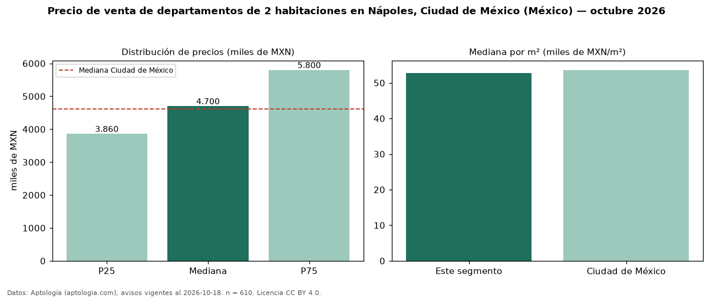

Precio de venta de departamentos de 2 habitaciones en Nápoles, Ciudad de México (México) — octubre 2026
MXN 4,70 millones es el precio mediano de departamentos de 2 habitaciones en venta en Nápoles, Ciudad de México (México) (n = 610 avisos). Prácticamente coincide con la mediana de Ciudad de México para departamentos de 2 habitaciones (MXN 4,61 millones). Por metro cuadrado, la mediana es MXN 52.715/m² (n = 602 avisos con área), 2 % por debajo de Ciudad de México (MXN 53.623/m²). Son 70 % de los 867 avisos de departamentos en venta de la zona, cuya mediana general es MXN 5,05 millones (−7 %). Con el precio por m² de renta del mismo segmento (MXN 308/m² al mes), la rentabilidad bruta implícita es 7,0 % anual (aproximación con medianas de ofertas distintas). El área mediana anunciada es 84 m². La mitad central de los avisos va de MXN 3,86 millones a MXN 5,80 millones (razón 1,5), una dispersión moderada. Datos: Aptología (aptologia.com), CC BY 4.0 — https://www.aptologia.com/. Archivos: PDF, CSV con las cifras y gráfica PNG.

| Avisos únicos | 610 |
|---|---|
| Percentil 25 | COP 3.860.245 |
| Mediana | COP 4.700.001 |
| Percentil 75 | COP 5.800.163 |
| Mediana por m² | COP 52.715 |
Fuente: avisos vigentes de portales inmobiliarios recopilados por Aptología, deduplicados (mínimo 30 avisos únicos por celda). Precios pedidos, no cerrados. Fecha: 2026-10-18.